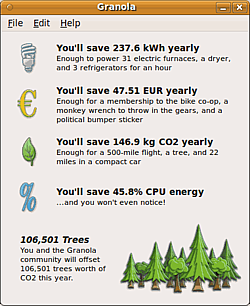

Granola
Archivierte Anleitung
Dieser Artikel wurde archiviert, da er - oder Teile daraus - nur noch unter einer älteren Ubuntu-Version nutzbar ist. Diese Anleitung wird vom Wiki-Team weder auf Richtigkeit überprüft noch anderweitig gepflegt. Zusätzlich wurde der Artikel für weitere Änderungen gesperrt.
Anmerkung: Projekt eingestellt
Zum Verständnis dieses Artikels sind folgende Seiten hilfreich:
Granola  ist ein in Python verfasstes Programm, das den Energieverbrauch des Rechners automatisch senkt. Das für Privatanwender kostenlose, aber proprietäre Programm verringert die CPU-Nutzung, ohne die Arbeitsgeschwindigkeit unter Belastung zu beeinträchtigen.
ist ein in Python verfasstes Programm, das den Energieverbrauch des Rechners automatisch senkt. Das für Privatanwender kostenlose, aber proprietäre Programm verringert die CPU-Nutzung, ohne die Arbeitsgeschwindigkeit unter Belastung zu beeinträchtigen.
Genutzt wird dafür DVFS  ("dynamic voltage and frequency scaling technology"), das auf den meisten neueren Rechnern (ca. seit 2005) einsetzbar sein sollte. Granola verwendet dazu
("dynamic voltage and frequency scaling technology"), das auf den meisten neueren Rechnern (ca. seit 2005) einsetzbar sein sollte. Granola verwendet dazu cpufreq, das seit 2.6.9 im Linux-Kernel vorhanden ist. Inwieweit allerdings die auf der Webseite angegebenen Werte tatsächlich erreichbar sind, müsste ggf. überprüft werden. Das vorgegebene Einsparpotential erscheint zumindest sehr hoch. Granola läuft leider nicht mit allen CPU-Treibern des Linux-Kernels, Details findet man im Abschnitt Probleme.
Eine Alternative zu Granola war Jupiter, das inzwischen eingestellt wurde. In den Artikeln Strom sparen und Prozessortaktung werden weitere Verfahren und Hintergründe erläutert. PowerTOP und laptop-mode-tools beschreiben konkrete Programme aus den offiziellen Paketquellen.
Hinweis:
Das Projekt wurde eingestellt, Pakete sind nicht mehr verfügbar - installierte Granola-Versionen funktionieren weiterhin, allerdings gibt es keinen Support und keine Weiterentwicklung mehr.
Installation¶
Das Programm ist nicht in den offiziellen Paketquellen enthalten.
Hinweis:
Nach der Installation von Granola muss der Rechner neu gestartet werden - die Anwendung kann ansonsten nicht ordnungsgemäß ausgeführt werden!
Fremdquelle¶
Eine Fremdquelle lässt sich über ein Installer-Skript einrichten. Es kann von der Downloadseite bezogen werden. Dann wird es mit Root-Rechten im Terminal im Download-Verzeichnis ausgeführt:
sudo ./installer.bash
Das Skript stellt fest, welche Ubuntu-Version genutzt wird (unterstützt werden z.B. 10.04 und 12.04) und installiert zunächst ein passendes Paket miserware-repo-latest.deb, um einen entsprechenden Eintrag in der /etc/apt/sources.list zu erstellen. Ggf. wird dazu - nach Abfrage - das Paket apt-transport-http installiert, das aber auf aktuellen Ubuntu-Versionen bereits vorliegen sollte.
Hinweis!
Zusätzliche Fremdquellen können das System gefährden.
Nach Aktualisierung der Paketquellen können die folgenden Pakete installiert [2] werden:
granola (ppa)
granola-gui (ppa)
 mit apturl
mit apturl
Paketliste zum Kopieren:
sudo apt-get install granola granola-gui
sudo aptitude install granola granola-gui
Möchte man eine Weboberfläche (zur Fernsteuerung) benutzen, installiert man stattdessen:
granola (ppa)
granola-connect (ppa, zur Steuerung und Verwaltung ggf. auch mehrerer Rechner über das Internet)
mit apturl
Paketliste zum Kopieren:
sudo apt-get install granola granola-connect
sudo aptitude install granola granola-connect
Achtung!
Die beiden Pakete granola-gui und granola-connect schließen sich gegenseitig aus.
Fertige Pakete¶
Wer keine Fremdquelle verwenden möchte, kann die benötigten Pakete auch bei miserware.com  direkt herunterladen und installieren [3]. Es werden Pakete für 32- und 64-Bit-Versionen angeboten.
direkt herunterladen und installieren [3]. Es werden Pakete für 32- und 64-Bit-Versionen angeboten.
Aus dem Quellcode kompilieren¶
Es besteht außerdem die Möglichkeit, auf der Seite des Herstellers ein Archiv herunterzuladen und Granola manuell zu installieren. Dazu lädt man auf der Herstellerseite unten die passende Datei herunter. Das GUI-Paket ist optional und wird für das eigentliche Programm nicht benötigt. Nach dem Herunterladen und Entpacken der Datei muss man die Anweisungen in der INSTALL.txt-Datei (englisch) befolgen. Danach ist Granola installiert und kann mit dem Befehl granola im Terminal[3] gestartet werden.
Benutzung¶
 Bei Ubuntu-Varianten mit einem Anwendungsmenü findet man die grafische Oberfläche über den Eintrag "Zubehör -> Granola".
Granola läuft nach der Installation ständig als Hintergrund-Prozess, um die Prozessoraktivität auf den tatsächlich nötigen Bedarf herabsetzen zu können. Konfiguriert werden kann es über die grafische Oberfläche. Dort lässt sich unter "Edit -> Einstellungen" festlegen, ob der höchste Spareffekt ("Lowest Speed", bringt die höchste Einsparung, aber ggf. auch Leistungseinbußen mit sich), die Anpassung für den jeweiligen Gebrauch des Prozessors ("MiserWare") oder die Steuerung ganz ausgeschaltet werden soll ("Highest Power", dann allerdings ohne Spareffekt). Zwischenzeitlich war diese Auswahl nur über die Einrichtung eines Accounts bei miserware.com möglich, das ist inzwischen zurückgenommen worden. Beim Wechsel wird die Eingabe des Benutzer-Passworts verlangt.
Über "Edit -> Account" ließ auch ein Konto einrichten, über den die Gesamtersparnis mehrerer verwendeter Rechner über ein Webinterface auf der Projektseite kumuliert berechnet und angezeigt werden konnte. Die Oberfläche lässt sich nach dem Start über ein unscheinbares Icon rechts im oberen Panel ein- und ausblenden.
Im Einstellungsdialog lässt sich die zu verwendende Währungseinheit (€, $ oder £) sowie die Kosten für eine Kilowattstunde angeben, die für die Hochrechnung der Einsparungen verwendet wird. Der CO²-Ausstoß kann in Kg oder lp. ausgegeben werden. Das Programm kann die Ersparnis entweder für die bisherige tatsächliche Nutzung ausgeben, oder das Ergebnis als Hochrechnung für ein Jahr Betriebsdauer.
Ausgegeben wird im Fenster dann die Einsparung in kWh, im Geldbetrag, sowie in eingesparter CO²-Emission, immer mit Angaben, was damit ansonsten bewirkt werden könnte. Außerdem zeigt Granola an, wie viele Prozente Energieeinsparung im Vergleich zur "ungesteuerten" Verwendung des Computers erfolgt. Zudem wird hochgerechnet, wie hoch die CO²-Einsparung umgerechnet in Bäume die Benutzer bewirken werden - gut fürs Öko-Gewissen... Das Anzeigen dieser Anzahl funktioniert allerdings nur bei einer bestehenden Internetverbindung. Das Programm ruft dazu in regelmäßigen Abständen trees.php?w auf, auf der die aktuelle Berechnung ausgegeben wird.
Überprüfung¶
Über den Befehl [4] watch lässt sich ausgeben, unter welchem Takt die CPUs laufen. Hier das Kommando für den ersten Prozessor(kern):
sudo watch -n 1 cat /sys/devices/system/cpu/cpu0/cpufreq/cpuinfo_cur_freq
Die Ausgabe wird im Sekundentakt aktualisiert und sollte sich bei Verwendung der Granola-Option "MiserWare" je nach Inanspruchnahme des Prozessors verändern. Für Mehrkern-Prozessoren muss cpu0 durch cpu1 etc. ersetzt werden. Wenn man beispielsweise zwei Kerne gleichzeitig beobachten möchte, braucht man dazu auch zwei Terminal-Fenster. Mit Programmen wie LM Sensors oder Psensor kann die Temperatur der CPUs ausgelesen werden. Auch hier sollte bei niedrigeren Granola-Levels die Temperatur sinken.
Wie hoch die Einsparungen tatsächlich ausfallen, ist letztendlich wohl nur über die Verbrauchsmessung z.B. mit einem Energiemessgerät möglich. Viele Laptops nutzen von sich aus schon ähnliche Methoden zur Energieeinsparung, sodass die Ersparnis ggf. recht niedrig ausfällt.
Problembehebung¶
powernowd¶
Granola ist nicht kompatibel mit powernowd, da beide über DVFS die Taktfrequenz anpassen, und daher nicht gleichzeitig verwendet werden können. Um Granola nutzen zu können, muss ggf. vor Installation das Paket powernowd entfernt werden.
Inkompatible Treiber¶
Die Treiber p4-clockmod, gx-suspmod und cpufreq-nforce2 sind nicht mit Granola kompatibel (siehe FAQ ).
Erhöhter Stromverbrauch nach Deinstallation¶
Das Paket granola entfernt beim Installieren die Start-/Stoppeinträge des ondemand-Daemons:
1 2 3 4 5 6 7 | # aus /DEBIAN/postinst # Turn off the ondemand governor (Ubuntu 9.04+) if [ -f /etc/init.d/ondemand ]; then /etc/init.d/ondemand stop || true update-rc.d -f ondemand remove || true fi |
Beim Deinstallieren des Pakets werden die Start-/Stoppeinträge nicht wieder hinzugefügt. Dadurch ist nach der Deinstallation des Programms der Governor performance (die CPU läuft immer auf höchster Taktstufe) standardmäßig aktiv und der Stromverbrauch steigt erheblich. Einfache Abhilfe schafft die Neuinstallation des Pakets initscripts.
Links¶
Hilfeseite
des ProjektsBenchmarking
(PDF-Dokument)
Blogeintrag
zu DVFSForen-Diskussion
bei chip.deBeschreibung
auf softonic.de
- Erstellt mit Inyoka
-
 2004 – 2017 ubuntuusers.de • Einige Rechte vorbehalten
2004 – 2017 ubuntuusers.de • Einige Rechte vorbehalten
Lizenz • Kontakt • Datenschutz • Impressum • Serverstatus -
Serverhousing gespendet von